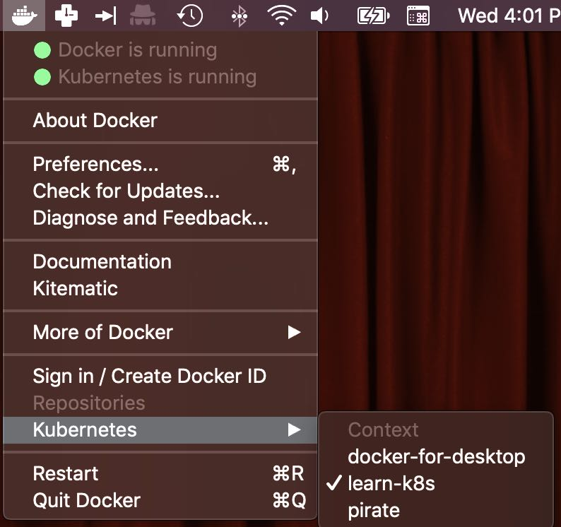

Namespaces¶
Namespaces allow you to break a Kubernetes cluster into several virtual clusters.
What namespaces exist for your cluster?
1 | kubectl get namespaces |
What objects are in a particular namespace?
1 | kubectl get all --namespace=kube-system |
Let's create the learn-k8s namespace that we'll use at times during this training.
1 | kubectl apply -f objects/namespace.yaml |
Verify it succeeded.
1 | kubectl get namespaces |
The kubectl context¶
A context is just that, a context for what cluster, which user and which namespace should be used for communicating to an API server.
You can use contexts for switching between different clusters or even the same cluster but with a different user, different namespace or both.
We're going to create a context for the docker-for-desktop cluster that sets the namespace to learn-k8s so all of the resources you deploy for these labs don't interfere with any resources you may have in the default namespace. That's what namespaces are for! To keep things separated.
We'll call the context learn-k8s (first positional argument).
1 | kubectl config set-context learn-k8s --cluster=docker-for-desktop-cluster --user=docker-for-desktop --namespace=learn-k8s |
Then we weed to tell kubectl to use this context.
1 | kubectl config use-context learn-k8s |
Test that it worked:
1 | kubectl get pods |
If you get an error message like The connection to the server localhost:8080 was refused - did you specify the right host or port?, its probably because the cluster name in your $HOME/.kube/config context you created doesn't match any cluster names in your context as the default server address for kubectl is localhost:8080.
Note
You can also switch the context by using the Docker toolbar utility.
